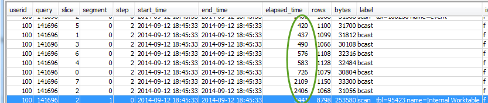

Uso de la vista SVL_QUERY_REPORT
Pasos para analizar la información resumida de una consulta por sector
-
Ejecute la siguiente función para determinar el ID de su consulta:
select query, elapsed, substring from svl_qlog order by query desc limit 5;Examine el texto truncado de la consulta en el campo
substringpara determinar qué valor dequeryrepresenta su consulta. Si ejecutó la consulta más de una vez, utilice el valorqueryde la fila con el valor deelapsedmás bajo. Esa es la fila de la versión compilada. Si ha ejecutado distintas consultas, puede aumentar el valor que utilizó la cláusula LIMIT para asegurarse de que su consulta esté incluida. -
Seleccione las filas de SVL_QUERY_REPORT para su consulta. Ordene los resultados por secuencia, paso, tiempo transcurrido y filas:
select * from svl_query_report where query = MyQueryID order by segment, step, elapsed_time, rows; -
En cada paso, controle que todos los sectores estén procesando, aproximadamente, la misma cantidad de filas:

Además, controle que a todos los sectores les tome, aproximadamente, la misma cantidad de tiempo:
Si hay grandes diferencias entre estos valores, puede indicar que hay un sesgo en la distribución de datos debido a un estilo de distribución que no es el óptimo para esta consulta en particular. Para conocer las soluciones recomendadas, consulte Distribución de datos poco óptima.